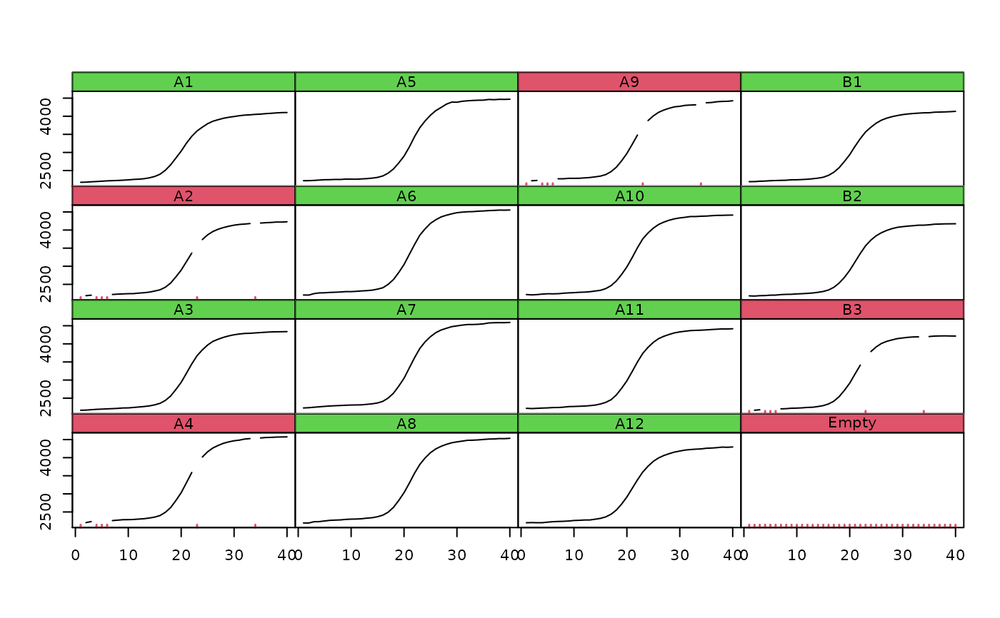

plotCurves.RdPlots many curves on one plot in table-like fashion.
plotCurves(x, y, cyc = 1, fluo = 2:ncol(x), one.plot = FALSE, nrow = ceiling(sqrt(ncol(y))), CPP = FALSE, ...)
| x | is the column of a data frame for the cycle or data.frame/matrix with whole data. |
|---|---|
| y | are multiple columns of fluorescence values from a
|
| cyc | is the index of column containing the cycle data.
Used only if |
| fluo | are the columns containing the fluorescence data.
Used only if |
| one.plot |
|
| nrow | number of rows in plot. Applies only if |
| CPP | logical, if |
| ... | additional arguments to |
plotCurves is a function for the quick assessment of amplification
curve raw data in an orthogonal matrix.
None.
Stefan Roediger, Michal Burdukiewicz, Konstantin A. Blagodatskikh
# First example plotCurves(VIMCFX96_60[, 1], VIMCFX96_60[, 2L:16], type = "l")# Second example y <- VIMCFX96_60[, 2L:16] # Introduce some missing values. y[c(1,4,5,6,23,34), c(2,4,9,15)] <- NA plotCurves(VIMCFX96_60[, 1], y, nrow = 4, type = "l")# Third example # Same as second example but the CPP option is set to TRUE. # Noise and missing values will be removed. y <- VIMCFX96_60[, 2L:16] # Introduce some missing values. y[c(1,4,5,6,23,34), c(2,4,9,15)] <- NA plotCurves(VIMCFX96_60[, 1], y, nrow = 4, CPP = TRUE, type = "l")#> Warning: More than 2 missing values in first 6 elements. #> Approximation may not be correct.#> Warning: More than 2 missing values in first 6 elements. #> Approximation may not be correct.#> Warning: More than 2 missing values in first 6 elements. #> Approximation may not be correct.#> Warning: More than 2 missing values in first 6 elements. #> Approximation may not be correct.# Fourth example plotCurves(VIMCFX96_60, y = NULL, one.plot = TRUE, type = "l")plotCurves(VIMCFX96_60, y = NULL, one.plot = FALSE, type = "l")